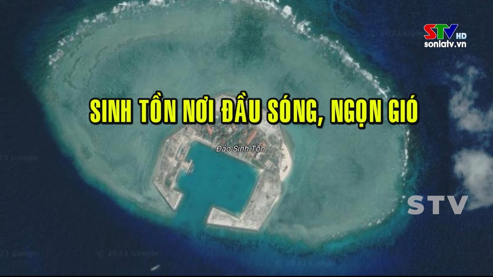
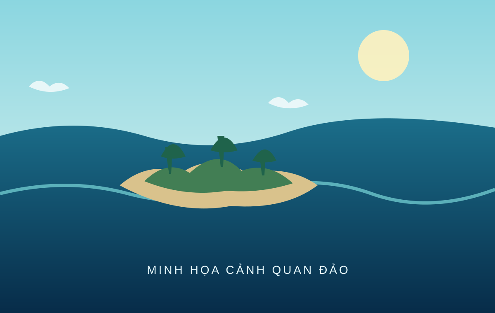

ĐIỂM ĐẾN 01Trường Sa Lớn
Một điểm đến tiêu biểu trong hành trình tìm hiểu địa lý, đời sống và các hoạt động trên quần đảo Trường Sa.
Bắt đầu khám pháĐi qua từng điểm đến để tìm hiểu cảnh quan, địa lý và đời sống trên quần đảo Trường Sa. Chọn một hòn đảo để bắt đầu hành trình.
Chọn điểm đến
Mỗi đảo có một trang web riêng. Hiệu ứng chuyển cảnh sẽ đưa bạn từ không gian tổng quan đến trang khám phá của đảo.

ĐIỂM ĐẾN 01Một điểm đến tiêu biểu trong hành trình tìm hiểu địa lý, đời sống và các hoạt động trên quần đảo Trường Sa.
Bắt đầu khám phá
ĐIỂM ĐẾN 02Khám phá đặc điểm tự nhiên và vai trò của đảo Sinh Tồn trong không gian biển đảo Việt Nam.
Bắt đầu khám pháMột điểm dừng trong hành trình tìm hiểu các đảo, cảnh quan biển và đời sống ở quần đảo Trường Sa.
Bắt đầu khám pháTìm hiểu cảnh quan, điều kiện tự nhiên và ý nghĩa của đảo An Bang trong quần đảo Trường Sa.
Bắt đầu khám pháVề không gian này
Website được xây dựng như một không gian tư liệu trực tuyến. Nội dung từng đảo có thể tiếp tục được mở rộng bằng hình ảnh thực địa, bản đồ, video, âm thanh thuyết minh và nguồn tham khảo đã kiểm chứng.
Một số đảo hiện dùng hình minh họa do gói tư liệu ban đầu chưa có ảnh riêng. Những thông tin địa lý cần xác minh được đánh dấu để tránh trình bày số liệu chưa chắc chắn như dữ kiện chính thức.
Thông tin website